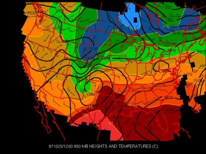

Advection Help Page
850 mb is approximately 5,000 feet above sea level. The 850 mb map is useful in looking for the advection (movement) of moisture. The advection of moisture is important for storm development because the moisture acts as fuel for the storm.When looking at the map, the wind barbs will show which direction the moisture is moving.

The different colors represent different amounts of moisture at this level of the atmosphere. The darker shades of red indicate a greater amount of moisture while the green and blue colors indicate dry air.